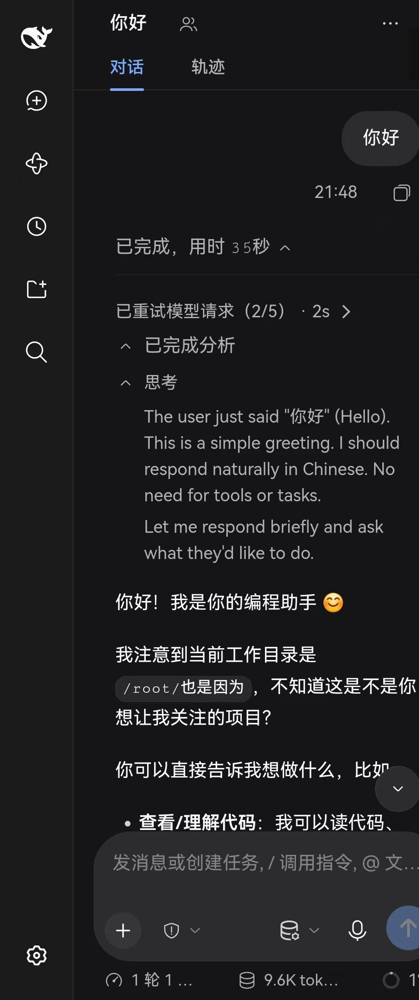
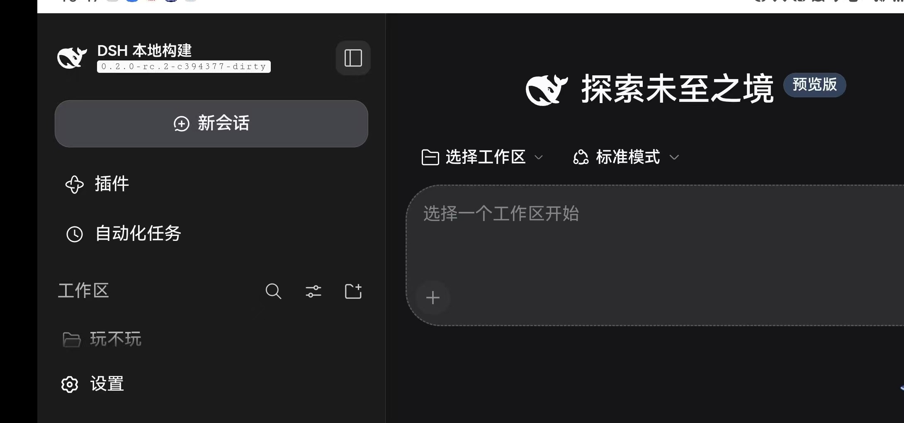
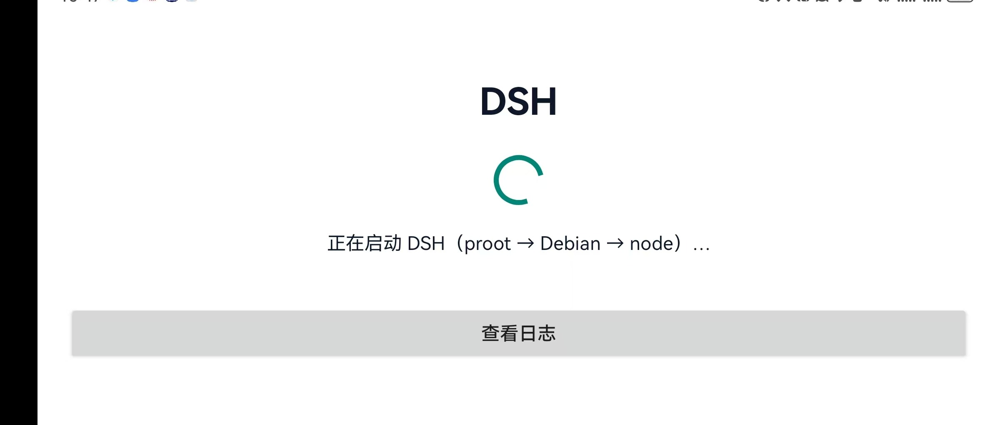

把 DeepSeek Harness
装进你的手机
一个 APK 内置 proot + Debian 12 + Node.js 24 + DSH 本体。 安装、点图标、直接用 —— 不需要电脑、不需要 Termux、不需要 root， 也不用导入 rootfs 或粘贴 token。

跑在 Android 手机上的 DSH
全部截图来自 arm64 / Android 12 真机，界面由 App 内置 WebView 打开本地 DSH 服务。


一个 APK，全套运行时
官方 DSH 运行时没有 Android 版，这个项目把「免 root 的 Linux 用户空间」整套塞进了一个安装包。
单文件安装
一个 APK = 运行时 + DSH 本体，没有外部依赖，不需要电脑配合。
零配置启动
自动解压 rootfs、自动启动 proot/node、自动捕获 token 并打开界面。
不需要 root
proot 是用户态实现，普通 App 权限即可运行，不动系统分区。
后台保活
前台服务 + 常驻通知：切后台、划掉任务后 DSH 继续运行，通知里可停止。
旧 WebView 兼容
内置 ES2023/2024 polyfill（Promise.withResolvers 等），老内核也能跑前端。
自带诊断
悬浮「⋯」随时看日志：网页 console、JS 异常、WebSocket 生命周期全可见。
为什么套一层 Debian
官方 DSH 支持 Linux arm64 + glibc，但 Android 用的是 Bionic libc —— 所以套一层 Debian，把手机伪装成官方支持的平台。
三步开始使用
首次启动需要解压约 3 GB 的运行时，之后每次点图标几秒进入。
- 下载安装：允许「安装未知来源应用」，安装 APK（约 893 MB）。
- 首次启动：授予存储权限 → 自动解压 rootfs，约 8–15 分钟（保持前台）。
- 开始使用：自动进入 DSH 界面；首次需自行登录 / 配置模型，之后切后台也会保持运行。
出问题能自己查
手机上开不了 DevTools 也不怕：App 把网页 console、JS 异常、WebSocket 生命周期全部写进内置日志，悬浮按钮随时「查看 / 复制」。
- 启动过程逐行可见（解压条目数、proot 输出、node 启动）
- 网页侧错误捕获：
Promise.withResolvers这类兼容问题一眼定位 - 一键复制日志，方便反馈问题
常见问题
为什么安装包这么大（893 MB）？
里面是完整的 Debian 12 用户空间 + Node.js 24 + DSH 及其依赖。Android 的 libc 与官方 Linux 运行时二进制不兼容，必须自带一整套 glibc 环境。
我的手机能装吗？
需要 arm64（绝大多数 2019 年后的安卓机）、Android 8.0+、约 4 GB 空闲存储。x86 模拟器不支持。
为什么安装时提示「为旧版 Android 打造」？
项目刻意把 targetSdk 定在 28 —— Android 10+ 禁止普通应用从私有目录执行二进制 / 加载动态库，而 proot 和它的 loader 都在私有目录里。这是 Termux 同款的历史豁免。
APK 里包含 API key 吗？
不包含。任何 Key / 账号 / 会话数据都是你自己的，首次使用需要在 DSH 里自行登录或配置模型。
会耗电吗？切后台会被杀吗？
proot 有 10–30% 性能开销，后台常驻会增加耗电；App 用前台服务保活，切后台 / 划掉任务后 DSH 继续运行。长期挂后台建议把 App 加入电池优化白名单。
开源吗？能自己构建吗？
MIT 许可。源码、构建脚本、rootfs 制作脚本和 15 条踩坑记录都在 GitHub 仓库 里。